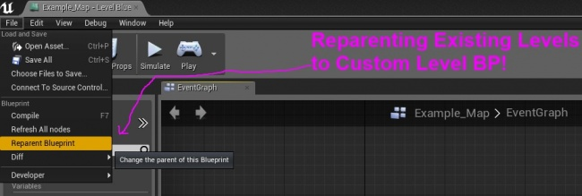
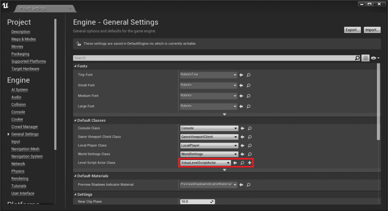
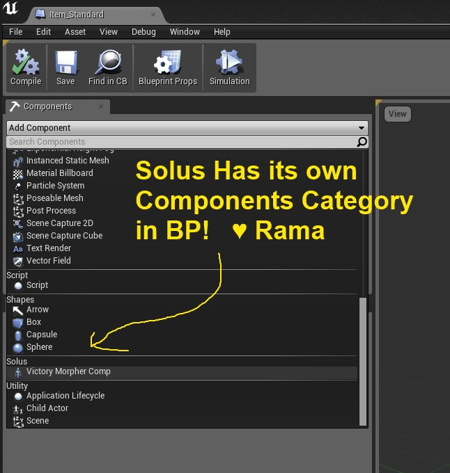
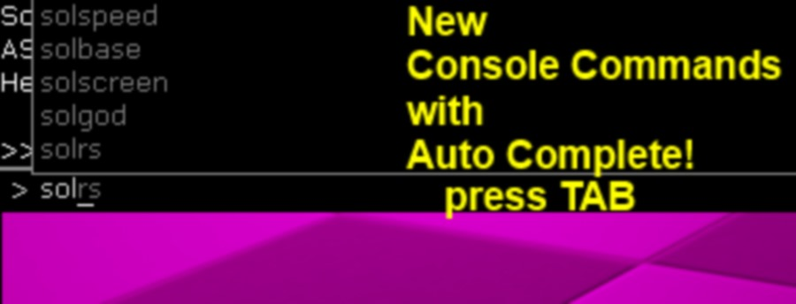
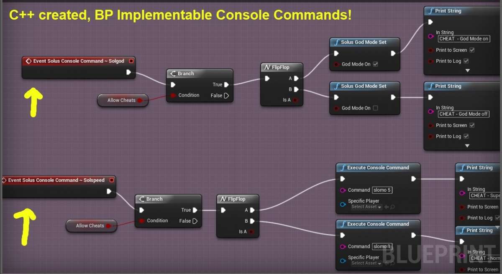

Solus C++ Tutorials
Contents
- 1 Overview
- 2 Solus C++ Tutorial: Creating Custom Level Blueprints in C++
- 3 Solus Options Menu: Screen Resolutions
- 4 Localized Text: FText
- 5 Custom BP-Accessible UObject Components
- 6 Globally Accessible Data Storage
- 7 How to Make Custom BP-Defined Console Commands
- 8 Custom Game Instance For Inter-Level Persistent Data
Overview
Author: ( )
This page is a repository for all of the C++ tutorials that I will be making that are directly related to the Solus Project!
The reason these are "Solus" tutorials is because I am sharing the development process of the Unreal Engine 4 game called Solus from the C++ perspective.
Showcase on Solus
Video: Introduction to Solus
<youtube> https://www.youtube.com/watch?v=lOqHpj71anw
Solus C++ Tutorial: Creating Custom Level Blueprints in C++
Author: ( )
For my grand goals for the Solus Save System, I needed a way to give every level a custom Solus Name, and I needed to associate binary save data with each level.
I also wanted to give Solus level Designers the ability to save to binary files any arbitrary data they needed, using only Blueprints.
I also wanted to tell each level to load its binary save data and save its binary save data when the level is streamed in and streamed out!
To do all of this in the most effective way possible was quite puzzle!
I finally realized that you can extend the Level Blueprint!
ALevelScriptActor
Each instance of the Level Blueprint is actually called ALevelScriptActor. And this is the class that you extend!
Using ALevelScriptActor you can create custom properties that are important for every level in your game!
ASolusLevelScriptActor

Using an extended version of ALevelScriptActor for Solus I have successfully:
- Created a custom name property that Level Designers can type in per-level, giving each Level the exact name that that they feel is appropriate, regardless of what the level .umap file is.
- I then create binary files using the Level-Designer-Chosen Solus Name! These are the files that show up in the save system of Solus.
- I have given every level in Solus a series of arrays of different data types so that Level Designers can load and save level-specific save data, using only Blueprints!
- This level-specific save data that Designers specify in the Level Blueprint is saved to hard disk as compressed binary file data , and is loaded/saved each time the level is streamed in or unstreamed.
C++ Code For You
Below I am sharing with you the basic structures you need to make your own custom Level Blueprints for your game!
.H
/*
Solus Level Script Actor Template
By Rama
This is a template you can use for your game to create custom properties for every level in your game!
You can also write blueprint node functions specific to your game's levels!
Enjoy!
-Rama
*/
#pragma once
#include "LevelScriptActor.h"
#include "SolusLevelScriptActor.generated.h"
UCLASS()
class ASolusLevelScriptActor : public ALevelScriptActor
{
GENERATED_UCLASS_BODY()
/** A Custom name for each Solus Level, specified in Level BP Default Properties! */
UPROPERTY(EditDefaultsOnly, BlueprintReadOnly, Category=SolusLevel)
FName SolusLevelName;
//===========
// BP Nodes
//===========
public:
/** This triggers a save / update of all the Solus Save Game level data. This should be called before the level is unloaded/unstreamed via blueprints.*/
UFUNCTION(BlueprintCallable, Category="Solus Level Save System")
void SolusLevel__UpdateLevelSaveData();
//OVERRIDES
protected:
virtual void ReceiveBeginPlay() OVERRIDE;
//ON REMOVE FROM WORLD - USE INSTEAD OF BEGIN DESTROY
/** Called when this actor is in a level which is being removed from the world (e.g. my level is getting UWorld::RemoveFromWorld called on it) */
/*
virtual void OnRemoveFromWorld() override;
*/
//THIS GOT REPLACED BY
virtual void EndPlay(const EEndPlayReason::Type EndPlayReason) override;
//TICK
protected:
//Tick
virtual void Tick(float DeltaSeconds) OVERRIDE;
};
.CPP
/*
Solus Level BP Template
by Rama
*/
#include "Solus.h"
#include "SolusLevelScriptActor.h"
ASolusLevelScriptActor::ASolusLevelScriptActor(const class FPostConstructInitializeProperties& PCIP) : Super(PCIP)
{
SolusLevelName = NAME_None;
}
//~~~~~~~~~~~~~~~~~~~~~~~~~~~~
// Solus Level Begin Play
//~~~~~~~~~~~~~~~~~~~~~~~~~~~~
//Actor.h ReceiveBeginPlay()
void ASolusLevelScriptActor::ReceiveBeginPlay()
{
Super::ReceiveBeginPlay();
//~~~~~~~~~~
//UE_LOG(YourLog,Error,TEXT("STREAMING LEVEL BEGIN PLAY %s"), *GetName());
}
//~~~~~~~~~~~~~~~~~~~~~~~~~~~~
// Solus Level End Play
//~~~~~~~~~~~~~~~~~~~~~~~~~~~~
void ASolusLevelScriptActor::EndPlay(const EEndPlayReason::Type EndPlayReason)
{
Super::EndPlay(EndPlayReason);
/*
UE_LOG(YourLog,Error,TEXT("STREAMING LEVEL UNSTREAMED (name should not be none) %s"), *GetName());
UE_LOG(YourLog,Error,TEXT("Victory!!!"));
UE_LOG(YourLog,Error,TEXT("RUN ALL UNSTREAMING LEVEL LOGIC HERE"));
*/
//Save Level Just Before Exiting
SolusLevel__UpdateLevelSaveData();
Super::OnRemoveFromWorld();
//~~~~~~~~~~
}
void ASolusLevelScriptActor::SolusLevel__UpdateLevelSaveData()
{
//Save Level Data
}
void ASolusLevelScriptActor::Tick(float DeltaSeconds)
{
Super::Tick(DeltaSeconds);
//~~~~~~~~~~~~~~
//UE_LOG(YourLog,Warning,TEXT("Level Name Is: %s"), *SolusLevelName);
}
Get Level BP
In World.h:
Definition
/**
* Returns the current (or specified) level's level scripting actor
*
* @param OwnerLevel the level to get the level scripting actor for. Must correspond to one of the levels in GWorld's Levels array;
* Thus, only applicable when editing a multi-level map. Defaults to the level currently being edited.
*
* @return A pointer to the level scripting actor, if any, for the specified level, or NULL if no level scripting actor is available
*/
class ALevelScriptActor* GetLevelScriptActor( class ULevel* OwnerLevel=NULL ) const;
Sample Usage
AYourLevelScriptActor* MyLvlBP = Cast<AYourLevelScriptActor>(GetWorld()->GetLevelScriptActor());
if(!MyLvlBP) return;
MyLvlBP->Yay!();
Reparenting Existing Levels
For levels you've already made, you can reparent them to your custom Level BP like this:

Config/DefaultEngine.ini
The preferred method for changing the default Level Script Actor that is used for new levels has changed as of 4.7. Instead of manually editing the DefaultEngine.ini file, you now change this setting in the Project Settings window. Setting the default Level Script Actor here will update the DefaultEngine.ini file for you (the Editor may appear to freeze for several seconds while the DefaultEngine.ini file is being updated).

If you are still using a version of the Engine prior to 4.7, you can still tell UE4 that you want every new level to start using your custom Level BP by manually making the following change to your DefaultEngine.ini file for your project.
;---------------- CUSTOM LEVEL BP CLASS ------------------ ;--- new levels will use the new default script actor!!! [/Script/Engine.Engine] ;LevelScriptActorClassName=/Script/Engine.LevelScriptActor LevelScriptActorClassName=/Script/Solus.SolusLevelScriptActor ;----------------------------------------------------------
Conclusion
Now you know how to make custom Level Blueprints to create a link from C++ to every Level Blueprint in your Game!
Enjoy!
( )
Solus Options Menu: Screen Resolutions
I just finished writing a function to obtain all of the screen resolutions supported by the player's display adapter!
If you just want to test this in some class you can remove the word static, otherwise you can add it to your own static function library!
static FORCEINLINE void GetDisplayAdapterScreenResolutions(FScreenResolutionArray& Resolutions)
{
if (RHIGetAvailableResolutions(Resolutions, false))
{
for (const FScreenResolutionRHI& EachResolution : Resolutions)
{
UE_LOG(YourLog, Warning, TEXT("DefaultAdapter - %4d x %4d @ %d"),
EachResolution.Width, EachResolution.Height, EachResolution.RefreshRate);
}
}
else
{
UE_LOG(YourLog, Error, TEXT("Screen Resolutions could not be obtained"));
}
}

Localized Text: FText
In order to ensure that your game will have correctly formatted text for any language, use FText everywhere!
FText automatically handles Localization for you!
Thank you Epic!
Check for Valid FText
FText MyText;
//possibly do some stuff with MyText
if(MyText.IsEmpty())
{
//the text is not valid
}
Concatenating FText
To concatenate FText you use the FText::Format functions!
Named
if you want to retrieve the data in any order, you can use named arguements!
//Set Formatted FTEXT from variable data.
FFormatNamedArguments Args;
Args.Add("DayCount", SaveDetails.DayCount); //int32
Args.Add("HP", SaveDetails.PlayerHealth); //int32
//Get Formatted FText back!
DayCount = FText::Format(NSLOCTEXT("Solus","Day","Day {DayCount}"), Args);
Health = FText::Format(NSLOCTEXT("Solus","HP","HP {HP}"), Args);
Ordered
If you know what the order will be for sure, you can use ordered arguments!
FFormatOrderedArguments Args;
Args.Add(SaveDetails.DayCount); //int32
Args.Add(SaveDetails.PlayerHealth); //int32
DayCount = FText::Format(NSLOCTEXT("Solus","Day","Day {0}"), Args);
Health = FText::Format(NSLOCTEXT("Solus","HP","HP {1}"), Args);
Conclusion
Enjoy!
Custom BP-Accessible UObject Components
Here's how you can make your own custom UObject components exposed to Blueprints! Including their own visible Category!
#pragma once
#include "VictorySkelMeshComp.h"
#include "VictoryMorpherComp.generated.h"
UCLASS(ClassGroup=Solus, meta=(BlueprintSpawnableComponent))
class UVictoryMorpherComp : public UVictorySkelMeshComp
{
GENERATED_UCLASS_BODY()
//SkelMeshComp
protected:
//Init
virtual void InitializeComponent() OVERRIDE;
//Tick
virtual void TickComponent(float DeltaTime, enum ELevelTick TickType, FActorComponentTickFunction *ThisTickFunction) OVERRIDE;
};

Globally Accessible Data Storage
This is a tutorial on a place you can store data that you want to access from any CPP or BP class, at any time during runtime!
How to Make Custom BP-Defined Console Commands
In this tutorial I am showing you how you as the C++ programmer can empower your whole team to run functions any time , from anywhere they want while they are in-game.
And! You are giving them the power to define these functions themselves using Blueprints!
These functions are console commands, you press the ~ key or whatever key you set to open the console, and then you can type in your custom functions and their names will appear!
But in the C++, all you do is set up the code structure, and then your whole team can define how these console commands work in Blueprints!
The end result is that you are giving your team the ability to define a set of functions that they can use any time anywhere to do whatever they want!
Solus Examples
In Solus, Hourences wanted a series of console commands he could run at any time to alter the player state, kind of like in-game cheats like in older games.
-faster movement speed
-player cannot be killed / God Mode
-Camera orbit mode
-Give player full inventory / whatever base set of items Hourences chooses
-And anything else Hourences wants to do! He can define the functions any way he wants!
Pics
This is how the console commands look in game! You can Tab-autocomplete through your custom BP-implemented console commands!

Hourences implemented the console commands created in C++ in exactly the way he wanted in BP!

.H
The code involved is not that complex, I took a BlueprintImplementable function and added "exec" to it!
Thanks to Epic, just adding "exec" causes these functions below to show up in the TAB-auto-complete list in the console window!
//~~~~~~~~~~~~~~~~~~~~~~~~~~~~~~~~
// Console Commands BP Implementable
//~~~~~~~~~~~~~~~~~~~~~~~~~~~~~~~~
public:
UFUNCTION(exec, BlueprintImplementableEvent, meta=(FriendlyName = "Solus Console Command ~ solrs"))
virtual void solrs();
UFUNCTION(exec, BlueprintImplementableEvent, meta=(FriendlyName = "Solus Console Command ~ solgod"))
virtual void solgod();
UFUNCTION(exec, BlueprintImplementableEvent, meta=(FriendlyName = "Solus Console Command ~ solscreen"))
virtual void solscreen();
UFUNCTION(exec, BlueprintImplementableEvent, meta=(FriendlyName = "Solus Console Command ~ solbase"))
virtual void solbase();
UFUNCTION(exec, BlueprintImplementableEvent, meta=(FriendlyName = "Solus Console Command ~ solspeed"))
virtual void solspeed();
UFUNCTION(exec, BlueprintImplementableEvent, meta=(FriendlyName = "Solus Console Command ~ solwalk"))
virtual void solwalk();
Conclusion
Now you know how to empower your whole team to define their own console commands in Blueprints!
Enjoy!
Rama
Custom Game Instance For Inter-Level Persistent Data
As of 4.4 there is a new class called the Game Instance which you can use to store data that you want to persist between different levels involving a full level transition!
It's such an important new Engine feature that I gave it its own wiki page here:
Enjoy!
( )